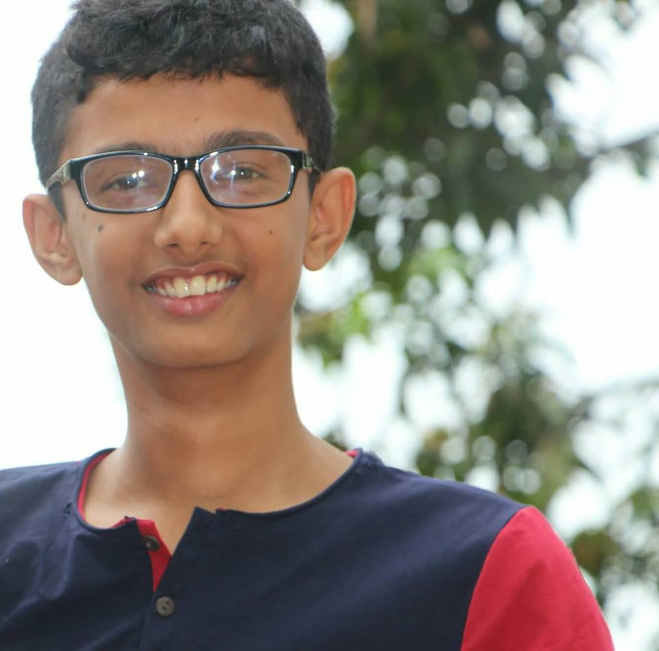

| HOME. | SOURCES | FRAMESET | ABOUT |
Bio of the Web-Designers:
Name: Prithak Adhikari Gender: Male Age: 15 Birth Date: 2061/05/31 2004/09/16 Grade: 9 School: Skyrider Secondary English Boarding School Section: 'A4' Roll no: 27 Symbol No: 9427 Address: Ratnanagar-1, Sauraha Gate, Chitwan, Nepal
Name: Anamol Chapagain Gender: Male Age: 15 Birth Date: 2061/05/31 2004/09/16 Grade: 9 School: Skyrider Secondary English Boarding School Section: 'A4' Roll no: 07 Symbol No: 9407 Address: Ratnanagar-1, Bakulahar, Chitwan, NepalThis website was created for the project given to the computer section of Grade 9(The Sections 'A4' and 'A5').
This website was created with the help of Rabin Ghimire Sir(Computer Teacher), some friends and the internet. The list of sources are given in SOURCES page.